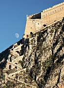
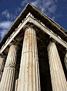
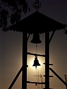
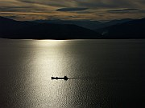
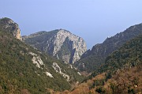
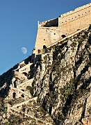
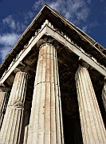
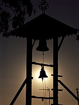
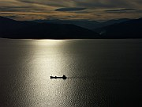
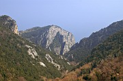

Disclaimer: These pages are not actively maintained, and some of the practical information on the site is out of date. I am working on a new version of the site that will focus more on my photos and memories of travel in Southeast Europe, and less on practical details that too easily become obsolete. In the meantime, please treat the information here with caution.
Mainland Greece :: Introduction
Unlike many of the countries described in this site, Greece as a tourist destination needs little introduction. Its ancient heritage has assured it of a place on Grand Tours of Europe for centuries. In more recent decades the azure skies and sparkling seas of the Greek islands have attracted northern Europeans in their millions. But if you think that all this attention has made travel in Greece stale and predictable, think again. Mainland Greece often gets no more than a rushed couple of days in the itineraries of travellers keen to head off to the islands, but just like the other Balkan countries, its mixture of landscape, history, and culture rewards a more leisurely exploration.
Where to go: some suggestions
Travellers arriving in Greece from neighbouring Balkan countries are likely to find themselves in Thessaloniki. Greece's second-largest city is much more than a transport hub. It doesn't have Classical sites as imposing as those in Athens, but its many reminders of the Byzantine and Ottoman periods are well worth exploring. The surrounding province of Macedonia offers a variety of attractions, from the landscapes of Mount Olympus to the treasues of the Macedonian dynasty at Vergina. Greece's links to the rest of the Balkan peninsual are especially evident in the Ottoman architecture of towns such as Veria, Edessa, and Kavala.
South of Mount Olympus lies the province of Thessaly, home to two of the mainland's most interesting tourist draws. The lush green landscape of the Pelion Peninsula, dotted with springs and streams, juts out into the Aegean Sea. Villages of whitewashed houses cling to the slopes, and are linked by a network of footpaths (kalderimia). Built to enable villagers and their mules to get around, these paths are now a gift to hikers - with the aid of a good map it's possible to devise a variety of walking routes through the wooded interior of the peninsula.
Also in Thessaly is the very different landscape of Meteora. Of all the isolated and beautiful locations in which Orthodox monks throughout the Balkans have chosen to make their homes, Meteora is possibly the most unusual and impressive. A visit to its monasteries, perched precariously on top of towers of dark rock, may be one the highlights of your trip to Greece.
Athens needs no introduction. The image of the Acropolis crowned by the Parthenon is probably the single most recognisable picture of the Balkans. It's just one of many ancient sites in the city, supplemented by one of the world's great museums. Although the city's traffic and pollution have given it a somewhat mixed reputation with travellers, the makeover in advance of the 2004 Olympics has made it more visitor-friendly - the pedestrian walkway encircling the Acropolis provides the chance to escape from the hurly-burly and contemplate the city's treasures in peace.
From Athens it is just a short hop to the Peloponnese. The seaside town of Nafplio is worth visiting for its pretty Venetian streets and the imposing clifftop Palamidi Fortress. It is also a good base for visiting the Theatre of Epidaurus and the ruins of Mycenae. Further north, the Vouraikos Gorge Railway attracts many tourists to enjoy the steep ascent from the coast to the peninsula's mountainous interior.
There are many other places of interest on the Greek mainland that I have not yet had the chance to visit. At the top of my own wishlist are Zagoria and the Vikos Gorge in the northwestern province of Epirus. I'd also love to see the Byzantine city of Mystras, the Venetian port of Monemvasia in the Peleponnese, and the ancient ruins at Delphi and Olympia.
Practicalities
Thanks to Greece's many years of experience in dealing with clueless foreign tourists, it's a fairly easy country to travel around. The Greek alphabet takes a bit of getting used to (I find it more difficult than Cyrillic), but notices aimed at tourists tend to be in English.
Greece's rail network is limited but improving and can useful on certain routes - however parts of the network always seem to be closed for repairs. Fast, comfortable trains run between Athens and Thessaloniki - they are often crowded so a reservation may be a good idea. You can also get to Kalambaka (for the Meteora monasteries) and parts of the Peloponnese by train. The KTEL network of buses can get you just about everywhere.
Thessaloniki is the main hub for international road and rail routes. Trains run to Istanbul, Sofia, Skopje, and Belgrade. There are also buses to Turkey and Bulgaria (sometimes faster than the train), and to Tirana. You can also reach Albania by taking a ferry from Corfu to Saranda. There are of course many other ferries to Italy and to the Greek islands.
If you are one of the many people who wishes to visit Greece and Croatia in a single trip, you may be interested in my tips on travelling from Croatia to Greece.
 









More photos in my Greece Galleries